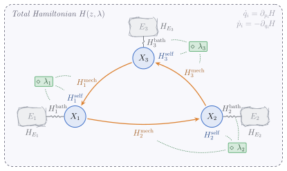

Reconciling Causality and Non-Equilibrium Thermodynamics with Hamiltonian Causal Models
Causal modeling of physical temporal phenomena must handle interventions that act along trajectories, nonstationary induced laws, path-dependent effects, and feedback mediated by dynamics, all challenging in standard causal models. We introduce Hamiltonian Causal Models (HCMs), a trajectory-level framework in which observed variables interact with local environments and interventions act as controls of Hamiltonian mechanisms. HCMs separate immutable equations of motion from intervenable mechanisms and define causal effects as discrepancies between interventional path laws. A key motivation for HCMs is their natural interface with non-equilibrium thermodynamics. Entropy production quantifies the irreversibility of a process and is a central causal observable: it is estimable from data and witnesses causal effects along the system’s evolution that are invisible to endpoint and cumulative versions of the standard average treatment effect. As in physics, cause and effect are not primitives of the relation between two random variables but arise from the non-invertibility of the thermodynamic arrow.

From the original paper (Rancati, Welling & Locatello, 2026). Highlights added for this walkthrough.
Step 01 — An observable and its own energy Each observed variable X_i lives on phase space and carries a self-Hamiltonian H_i^{\text{self}}(x_i,\lambda_i) — the energy stored in that node alone. This intrinsic term sets how the variable would evolve in isolation, before any coupling or environment enters the picture.
Step 02 — Coupling to a thermal bath Every node is wired to a local environment E_i through a bath term H_i^{\text{bath}}(x_i, e_i, \lambda_i). This is the thermodynamic interface: heat Q_i^\lambda flows across it at inverse temperature \beta_i, and it is exactly what makes a trajectory dissipative — and therefore irreversible.
Step 03 — Interventions are controls, not surgery An intervention is a time-dependent knob \lambda_i(t) that reshapes a node’s Hamiltonian terms — here \lambda_3 acting on the mechanism H_3^{\text{mech}}. Crucially, it lives inside the physics: it never touches the symplectic form or Hamilton’s equations, only the energy landscape.
Step 04 — Causal edges read off the mechanism The orange arrows are mechanism couplings H_i^{\text{mech}}(x_i,x_{-i}). Node X_j is a parent of X_i precisely when \partial_{x_j} H_i^{\text{mech}}\not\equiv 0 — so the causal graph is read off the Hamiltonian rather than postulated. Probing one node and watching the local entropy production at another turns this coupling into a measurable parenthood test.
Introduction
Classical structural causal models take the relationship between variables as primitive: a directed graph and a set of mechanisms are postulated, and interventions are defined by surgically replacing those mechanisms (Pearl 2009; Peters et al. 2017). This works well statistically, but it leaves open a physical question — where do mechanisms come from, and why are they directed at all? We argue that for systems governed by physical law the answer lies in thermodynamics.
We propose Hamiltonian Causal Models (HCMs), in which a system evolves on a symplectic phase space under a Hamiltonian whose structure encodes who couples to whom. Interventions are controls on that Hamiltonian, and a causal effect is a difference between the resulting path laws. The payoff is a bridge to non-equilibrium statistical mechanics: the irreversibility of a trajectory, quantified by entropy production, is a statistical signature of causal influence (Seifert 2012).
A claim that deserves a caveat lives in a margin footnote.1
1 We work with the idealization that the equations of motion are fixed and only the mechanism terms are intervened upon; coarse-graining of the environment into baths is assumed throughout.
Hamiltonian Causal Models
An HCM is a tuple \mathcal{M}=(\mathcal{P}, z_0, \Gamma, \omega, \mathcal{L}, \mathcal{A}, H): a probability space \mathcal{P} with a random initial state z_0, a symplectic manifold (\Gamma,\omega) that factorizes as \Gamma = \Gamma_X \times \Gamma_E into observed nodes and environment, an intervention manifold \mathcal{L}=\prod_i \mathcal{L}_i, an admissible class \mathcal{A} of adapted control policies, and a Hamiltonian H. The Hamiltonian splits per node into intrinsic, mechanism, and bath contributions:
H(z,\lambda)=H_E(e)+\sum_{i=1}^{n}\Big[ H_i^{\text{self}}(x_i,\lambda_i) + H_i^{\text{mech}}(x_i, x_{-i}, \lambda_i) + H_i^{\text{bath}}(x_i, e_i, \lambda_i)\Big].
Dynamics follow the Hamiltonian vector field Y_{H_\lambda} defined by \omega(Y_{H_\lambda}(t,\cdot),\cdot)=dH_\lambda(t,\cdot), where H_\lambda(t,z):=H(z,\lambda_t) uses the control at time t.
Parents from the Hamiltonian. Node X_j is a parent of X_i, written j\to i, exactly when the coupling term is non-trivial: \partial_{x_j} H_i^{\text{mech}}\not\equiv 0. The graph is thus read off the mechanism, not assumed.
An intervention is a time-dependent control \lambda_i(t) that can reshape H_i^{\text{self}}, H_i^{\text{mech}}, and H_i^{\text{bath}} independently — but it never touches the symplectic form or Hamilton’s equations themselves. This is the key departure from graph surgery: interventions live inside the physics rather than overriding it.
Path laws and causal effects
Let \Phi_t^\lambda be the controlled flow and \Psi^\lambda(\omega)(t):=\Phi_t^\lambda(z_0(\omega)) the induced trajectory. The forward observed path law is the pushforward \mathbb{P}_F^\lambda := (\Pi_X\circ\Psi^\lambda)_\#\,\mathbb{P}, and the node-wise marginal is \mathbb{P}_i^\lambda := (\Pi_i)_\#\,\mathbb{P}_F^\lambda. Then X_j has a causal effect on X_i over [0,T] if some pair of policies on j induces different marginals, \mathbb{P}_i^{(\lambda_j^{(1)};\lambda_{-j})}\neq \mathbb{P}_i^{(\lambda_j^{(2)};\lambda_{-j})}. The generalized trajectory ATE measures this with any path-space discrepancy \mathfrak{D}:
\mathrm{ATE}_{0:T}^{(i)}\!\big(\mathfrak{D};\lambda^{(1)},\lambda^{(2)}\big) := \mathfrak{D}\!\left(\mathbb{P}_i^{\lambda^{(1)}}, \mathbb{P}_i^{\lambda^{(2)}}\right).
The thermodynamic footprint of causality
The heart of the paper relates these path laws to irreversibility. The idea builds in four moves. First, the system starts at a random state z_0 and evolves under the controlled Hamiltonian flow, tracing one trajectory \Psi^\lambda through phase space; position and momentum co-evolve and the symplectic form is preserved exactly. Second, we run the same protocol backward in time: the forward path law \mathbb{P}_F^\lambda and the time-reversed path law \mathbb{P}_B^{\Theta\lambda} need not coincide — a dissipative process looks different played in reverse. Third, the asymmetry between the two laws is the pathwise entropy production \Sigma^\lambda = \log\,(d\mathbb{P}_F^\lambda / d\mathbb{P}_B^{\Theta\lambda}), which is zero only for a perfectly reversible process and otherwise measures how strongly the trajectory breaks the arrow of time. Fourth, probing node j and watching the local entropy production at node i turns this into a parenthood test: a nonzero response R_{i|j}\neq 0 witnesses the edge j\to i — a path-level effect that an endpoint average treatment effect can completely miss.
The pathwise entropy production is the log-ratio of the forward path law to the backward path law \mathbb{P}_B^{\Theta\lambda} run under the time-reversed policy:
\Sigma^\lambda(x):=\log\frac{d\mathbb{P}_F^\lambda}{d\mathbb{P}_B^{\Theta\lambda}}(x), \qquad \Sigma^\lambda=\Delta s_{\text{sys}}^\lambda-\sum_i \beta_i\,Q_i^\lambda,
decomposing into system-entropy change and heat exchanged with the baths at inverse temperatures \beta_i — a stochastic-thermodynamics identity in the tradition of the fluctuation theorems (Jarzynski 1997; Crooks 1999). Projecting onto a single node gives a local entropy production \Sigma_i^{\text{proj},\lambda}(x_i):=\log\frac{d\mathbb{P}_i^\lambda} {d(\mathcal{R}_i)_\#\mathbb{P}_i^\lambda}(x_i).
The operational consequence: if two policies on j produce different expected local entropy production at i, then j causally affects i. Under right-local probe protocols this becomes an exact parenthood test, i\in\operatorname{Pa}(j) \Longleftrightarrow R_{i|j}(t^*)\neq 0, where R_{i|j} is the local entropy-production response to a probe on j. Causal structure is thereby recoverable from a thermodynamic measurement (Schölkopf et al. 2021).
Intuitively, how an intervention is driven matters. A protocol applied quasi-statically leaves little footprint; the same endpoint reached by a fast, overshooting drive dissipates more and pulls the forward and reversed path laws apart. As the drive accelerates, the two laws separate and the entropy-production gap \Sigma^\lambda grows — even though both protocols arrive at an identical final state.
Results
The framework’s distinctive prediction is that path-level effects can exist where endpoint effects vanish. Two protocols can be engineered to reach the same final marginal — so the classical endpoint ATE is zero — yet differ in their irreversibility. Local entropy production sees the difference; the endpoint estimand cannot.
Two of the paper’s running systems are engineered so the endpoint (or cumulative) ATE is statistically indistinguishable from zero, while the projected entropy production \Sigma_i^{\text{proj}} registers a large, significant effect (values from the original paper):
| System | Standard ATE estimand | ATE on \Sigma_i^{\text{proj}} |
|---|---|---|
| Same-endpoint protocols (10-node chain) | -0.012 [-0.037, +0.012] | -0.366 \pm 0.001, p=2.3\times10^{-6} |
| Reversed-order pulses (3-node mediator) | +0.002 [-0.062, +0.067] | -0.417 \pm 0.017, p=6.8\times10^{-7} |
The same-endpoint case uses a linear chain of overdamped oscillators with two protocols (a smooth ramp versus an overshooting excursion) that reach an identical endpoint; the mediator case sends two pulses in opposite temporal orders through a hidden nonlinear mediator. Both are deliberately adversarial to endpoint methods: the trajectories differ only in their path-level irreversibility.
For structure recovery, the paper studies Langevin HCMs on random Erdős–Rényi directed graphs (n=15 nodes, edge probability 0.10, N=8000 samples, 10 graphs per family) with bilinear, sigmoid (\beta=2.5), and cubic (\gamma=0.5) interaction kernels. Local entropy-production rates recover parenthood with F1 scores around 0.83–0.86 across the three kernel families (as reported in the original paper), complementing constraint-based discovery (Spirtes et al. 2000).
Conclusion
Hamiltonian Causal Models reposition causality as an emergent, physical quantity: interventions are controls on a Hamiltonian, effects are differences between path laws, and irreversibility — entropy production — is the statistical footprint that makes causal influence measurable. This ties causal inference to the thermodynamic arrow of time and suggests that, for physical systems, the direction of causation and the direction of dissipation are two views of the same asymmetry. Full references appear in the margin and below.
Citation
@article{rancati2026,
author = {Rancati, Dario and Welling, Max and Locatello, Francesco},
title = {Reconciling {Causality} and {Non-Equilibrium}
{Thermodynamics} with {Hamiltonian} {Causal} {Models}},
journal = {arXiv preprint},
date = {2026-06-03}
}